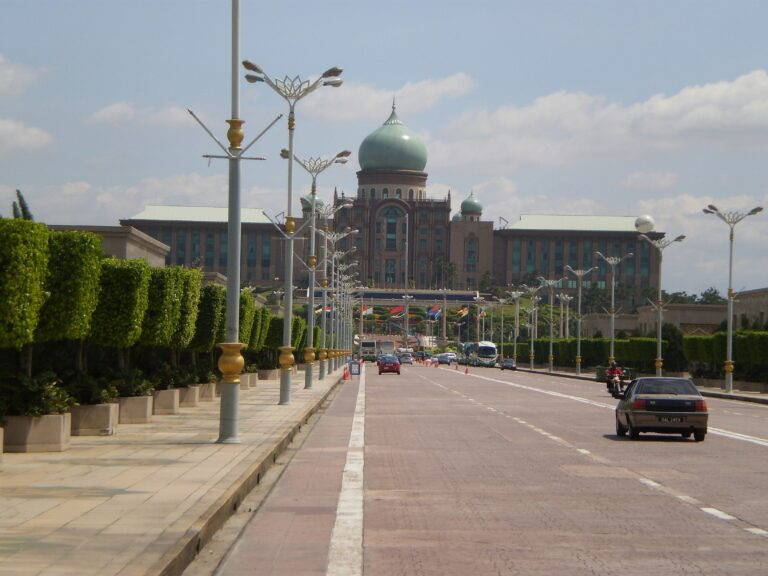

By Adli Amirullah, Chief Economist, Wawasanex
With the aftermath of the Sabah election still fresh, the political ground is shifting rapidly as Malaysia’s next general election must be held by February 2028. Electoral boundaries are slated to be redrawn by 2026, with the last gerrymandering exercise taking place before the 2018 election, a move that could significantly reshape constituencies and voter dynamics. Against this backdrop, is the PMX administration, under the Madani government branding, striving or struggling to deliver on its economic vision?
That question matters because the answer will determine something more consequential. Can this vision, often dubbed “Anwarnomics” (a term originally coined by Bloomberg columnist Andy Mukherjee in 2018, emphasizes inclusive, rules-based, and competition-oriented growth, in contrast to the crony-driven models of the past), translate from intent into outcomes that are both economically sound and politically credible as the country moves toward the 16th General Election? With a recent Cabinet reshuffle filling several vacancies and realigning portfolios, the government now has less room to signal direction and more pressure to demonstrate results.
Driving Digital Transformation and AI Leadership
Digital transformation is often presented as a flagship of Anwarnomics, and for good reason. A rules based and competition oriented growth model depends heavily on how technology is adopted across the economy, not just at the frontier. Recent economic policy has placed strong emphasis on the digital economy and Artificial Intelligence (AI), signalling a clear intent to position Malaysia as a regional AI frontrunner by 2030. This direction aligns closely with the 13th Malaysia Plan (RMK-13) and is reinforced by growing investment interest in data centres across the country.
However, how Anwarnomics approaches digitalisation matters as much as how much it invests. Data centres may be the current superstar of digital infrastructure, but they are not where the real economic test lies. The real question is whether digital policy meaningfully improves participation and productivity for businesses on the ground. We as the Rakyat should be asking whether investments strengthen local MSMEs, enable wider adoption of digital tools, and lower barriers to entry, rather than merely attracting capital intensive infrastructure.
Seen through this lens, the RM350 million allocation in Budget 2026 through the Malaysian Communications and Multimedia Commission (MCMC) to strengthen more than a thousand National Information Dissemination Centres (NADI) is a more telling policy signal. Turning these centres into training and entrepreneurship hubs for rural digital businesses reflects an understanding that digital inclusion is built from the bottom up. Having worked in the tech sector, I have seen firsthand how these centres bridge the urban rural digital divide. During visits to remote areas, villagers were learning e-commerce and digital skills, keeping communities connected and local entrepreneurs economically active. This initiative also has clear potential to be expanded further, particularly in equipping rural entrepreneurs with AI tools that can scale their operations and amplify local economic impact.
Yet Anwarnomics cannot rely on government delivery alone. A competition oriented digital ecosystem depends on public private collaboration. Technology companies such as Shopee, Google, and Microsoft have the capacity to complement government efforts, extend reach, and accelerate adoption. Well designed partnerships can ensure that connectivity and AI capabilities reach the last mile, not as abstract innovation, but as practical tools that expand income opportunities, improve access to services, and open new career paths. At its best, digital policy under Anwarnomics should expand real freedoms, not just deploy new technologies.
Challenge: The risk in digital policy is not lack of ambition, but rigidity in execution. Digital transformation is not one dimensional. Its ecosystem is equally important in ensuring that every layer of the Rakyat benefits. Several policy implementations under Anwarnomics raise concerns about counterintuitive outcomes, where well intentioned measures risk discouraging participation. For example, do you know if you are a micro seller operating online, you are required to comply with e-invoicing? Meanwhile if you run similar businesses operating offline, you are weirdly exempted. This inconsistency reflects a deeper issue of policy design that struggles to adapt to behavioural realities.
There is little doubt that e-invoicing was introduced with good intentions. However, digitalisation requires agility. When implementation is rigid, small businesses respond by exiting the digital space rather than complying. This undermines the very ecosystem Anwarnomics seeks to build. The digital test for Anwarnomics is therefore not how advanced the technology looks, but whether policy can adapt quickly enough to support participation, scale, and innovation without creating unintended barriers.
This ultimately raises a broader question for Anwarnomics, whether policy execution can remain agile and adaptive in fast moving ecosystems, or whether rigidity becomes a barrier to the very transformation it seeks to promote.
Strengthening the Care Economy as Social Infrastructure
Economic policy is often discussed in terms of industries, growth sectors, and physical infrastructure. Yet some of the most binding constraints on economic participation sit much closer to home. The care economy, encompassing childcare, elder care, and caregiving services, is one such constraint. It operates quietly, but its influence on labour participation, household stability, and productivity is significant.
As a working parent, this is not an abstract issue for me. My wife and I value the occasional date night, but that simple plan immediately raises a familiar question, who will take care of our little boy? In our case, we often rely on a local babysitting platform, Kiddocare. It works because it provides professional carers, a seamless platform experience, and peace of mind. This personal experience reflects a broader reality. For many households, access to affordable and reliable care is not a lifestyle preference, but a prerequisite for remaining economically active.
To understand the care economy properly, three interconnected layers must function together. The first is demand, families and individuals who require care services. The second is supply, the availability of trained and qualified caregivers. The third is the intermediary layer, the systems and platforms that connect those who need care with those who provide it.
Under Anwarnomics, progress across these layers has been uneven. On the demand side, there is growing recognition that care costs are not merely a social concern, but an economic constraint. High childcare costs directly affect labour participation, particularly among women. If Malaysia is serious about raising productivity and incomes, this constraint cannot be ignored. Demand for care services will only continue to rise as dual income households become the norm.
On the supply side, the structural weakness is more pronounced. Malaysia does not have enough trained caregivers to meet existing demand, let alone future needs as the country moves toward an ageing society by 2043. Care work has long been treated as informal, low skilled, and low paid. Efforts to introduce national care standards and expand TVET pathways for caregivers therefore matter beyond their fiscal size. They signal a shift in how caregiving is recognised as a profession, with long term implications for service quality and workforce sustainability.
Even with growing demand and improved supply, the care economy cannot function efficiently without a strong intermediary layer. This is where Anwarnomics remains least developed. Intermediaries determine whether demand and supply can meet at scale. Without platforms, agencies, or organised systems, families struggle to find caregivers while caregivers struggle to secure consistent work. My own reliance on a private digital platform illustrates how effective matching can be when the right tools are available.
This is where policy can play a catalytic role. Rather than focusing solely on end users or workers, Anwarnomics could do more to enable intermediaries. Seed funding, innovation grants, or targeted incentives for startups and cooperatives building caregiving platforms could unlock growth across the care ecosystem. Similar to how e-commerce formalised trust and matching in online shopping, care intermediaries could expand access, improve job opportunities for caregivers, and raise service standards at the same time. This layer remains an underutilised lever within the current policy framework.
Ultimately, strengthening the care economy is not about welfare expansion. It is about economic resilience and human capital. When parents have reliable care, they remain productive and attached to the labour force. When elderly family members receive proper care, households face less financial and emotional strain. A cradle-to-grave care ecosystem that includes quality childcare, disability support, and dignified elder care strengthens social cohesion and enables people to contribute meaningfully throughout their lives. If Anwarnomics is serious about inclusive growth, care services must be treated as core economic infrastructure, no less important than roads, ports, or digital networks.
Challenge: The main challenge lies in scaling and sustaining this ecosystem coherently. The intermediary layer in particular cuts across multiple laws, regulations, and agencies. Platforms that connect families and caregivers must navigate consumer protection frameworks on the demand side and labour or gig related rules on the supply side, each overseen by different ministries. This complexity is not a weakness. It is the natural outcome of innovation in a multi dimensional ecosystem.
The key question is not how fast new regulations can be introduced, but whether principle based policies can be designed to remain agile and adaptable while allowing innovation within this intermediary layer to continue growing. How this challenge is handled will shape whether the care economy evolves into a productive pillar of the Malaysian economy or remains a fragmented constraint on households and workers. At its core, this tests whether Anwarnomics can move beyond silo based regulation and adopt principle based policymaking that accommodates complex, cross sector ecosystems without stifling innovation.
Rethinking Housing Beyond Ownership
Home ownership has long been treated as a cornerstone of Malaysian socioeconomic policy, often framed as the primary pathway to middle class security. That assumption is increasingly misaligned with realities on the ground. Urban centres are filled with underutilised commercial spaces, from ageing office blocks to half empty malls, while younger Malaysians face high barriers to entering the housing market. During a recent walk around my neighbourhood, I noticed shoplots and office units sitting idle or frequently changing tenants. It raised a simple question. Why do we continue expanding outward when existing urban space is not being efficiently repurposed for living?
From an Anwarnomics perspective, housing policy must move from ideology to pragmatism. An economy that prioritises inclusion and efficiency cannot remain fixated on ownership alone. One policy signal in recent years points in the right direction. Developers converting commercial buildings into residential use are eligible for a tax deduction equivalent to 10% of renovation or conversion costs, capped at RM10 million. This is a supply side intervention that acknowledges structural inefficiencies in urban housing rather than stimulating demand further.
Lowering the cost of repurposing old malls and office towers encourages adaptive reuse of existing infrastructure. It reduces underutilised commercial stock while increasing housing supply in areas where demand already exists. More supply in the right locations can moderate prices and rents without heavy fiscal intervention. Industry observers have noted that this incentive has prompted developers to reconsider refurbishment projects that were previously not viable. In an era of shifting work patterns and shrinking retail footprints, this reflects a more mature understanding of urban evolution.
Yet housing discourse in Malaysia remains dominated by ownership. Buy if you can, struggle if you cannot. This ignores a growing segment of the population, particularly urban professionals, gig workers, and young families, who may never own property in city centres or who value flexibility over long term debt. In many developed economies, renting is a stable and legitimate long term option supported by clear legal protections.
If Anwarnomics is serious about improving quality of life rather than defending outdated metrics, housing policy must broaden its focus to accessibility and stability. This is why the long delayed Residential Tenancy Act remains one of the most critical missing reforms under the Madani government. A clear tenancy framework would rebalance landlord tenant relationships, reduce disputes, and give renters confidence to treat rental housing as a long term solution. It would also professionalise the rental market and unlock institutional investment into quality rental housing.
Housing reform is politically relevant as the country approaches the next general election. Renters now form a sizable and growing voting group in urban constituencies. Middle income households are squeezed between rising housing costs and stagnant income growth. Addressing rental security and affordability is not only sound economics, but a test of whether Anwarnomics can respond to lived realities.
Challenge: The deeper challenge in housing policy is not insufficient intervention, but intervention in the wrong place. Too often, housing policy defaults to demand side measures without addressing supply side imbalance. Malaysia faces a clear mismatch, with excess supply in higher priced segments and persistent shortages in genuinely affordable housing. This is not a market failure. It is a pricing problem.
Basic economics suggests that when supply exceeds demand, prices should adjust downward. Developers should reduce prices to expand access rather than seeking subsidies, incentives, or extended loan tenures that push households into unsustainable debt. Such approaches shift risk from the market onto families while obscuring the true affordability issue.
If Anwarnomics is serious about rules based and competition oriented growth, demand side intervention should not be the default. Excessive incentives or controls may provide short term political relief but distort price signals and delay correction. Housing is a sector where allowing markets to adjust naturally is often more efficient, benefiting both the Rakyat and responsible developers.
Of course this does not imply blind faith in markets. Where distortions such as cartel behaviour or coordinated price fixing exist, government intervention is necessary. Competition policy matters. However, outside of such unnatural behaviour, policymakers should trust market forces to correct imbalances rather than forcing outcomes through artificial demand stimulation.
This is where Anwarnomics is tested on its ability to distinguish between enabling market correction and distorting it, and to intervene only where genuine failures exist rather than where outcomes are politically inconvenient.

Conclusion: Anwarnomics on the Road to 2028
As the Madani government approaches the latter part of its term, Anwarnomics is no longer being judged on intent or ambition. It is being judged on instinct. With the next general election approaching, the question is no longer what the government wants to do, but how it chooses to act when policies meet real world complexity, political pressure, and unintended consequences.
This is why digital transformation, the care economy, and housing are useful lenses to examine Anwarnomics. They do not belong to the same sector. They cut across technology, social infrastructure, and the built environment. What connects them is not subject matter, but the policy lessons they expose when theory meets execution.
Across all three areas, the same underlying question appears. What does good policymaking look like in an economy that is fast moving, structurally uneven, and politically constrained. At this stage of governance, Anwarnomics is less about announcing direction and more about demonstrating policy maturity.
The first lesson is agility and adaptability. In digital policy, rigid implementation risks pushing small businesses out of the very ecosystem the government seeks to grow. In the care economy, slow adjustment leaves supply and intermediary layers underdeveloped despite rising demand. In housing, delayed response to market signals prolongs imbalances between price, supply, and affordability. Policies that cannot adapt quickly to real behaviour tend to undermine their own objectives.
The second lesson is the importance of principle based policymaking. Whether regulating digital platforms, professionalising care work, or managing housing markets, prescriptive rules struggle to keep pace with evolving ecosystems. Principles such as competition, consumer protection, and fairness must guide decisions, rather than narrow rules that become obsolete as innovation advances.
The third and most difficult lesson is knowing when and where to intervene. Effective policy does not mean constant intervention. In some cases, the state must step in decisively, such as when market power is abused or vulnerable groups are systematically excluded. In others, restraint is equally important. Overcorrecting through demand side incentives, excessive controls, or premature regulation can distort incentives and delay necessary adjustment.
Taken together, these lessons show whether Anwarnomics genuinely practises what it preaches. The real test is not what the government says, but how it behaves when policies meet resistance or produce uncomfortable outcomes. Does it trust systems to work as intended, or does it step in too quickly to control results when things do not go as planned?
As Malaysia moves closer to the next general election, Anwarnomics will be judged less by frameworks and slogans, and more by whether policies feel coherent or reactive, enabling or constraining. The final measure is not how much the government intervenes, but whether it intervenes with discipline, clarity, and purpose.
The remaining years before GE16 will determine whether Anwarnomics is remembered as a maturing economic philosophy, or as an opportunity weakened by inconsistency.
About the Author: Adli Amirullah is an economist by training with over 8 years of dedicated experience in public policy, specialising in e-commerce, technology, and SME development. He has authored more than 10 independent studies covering a wide range of topics, including taxation, trade, business regulation, and intellectual property. He has held key roles across think tanks, government-linked agencies, and the private sector. Across these roles, Adli has contributed to shaping evidence-based policies, fostering public-private collaboration, and advancing Malaysia’s digital and economic transformation agenda. He holds a Bachelor of Economics (Honours) from the International Islamic University Malaysia (IIUM) and a Master of Research (MRes) in Economics from the University of Malaya, specialising in public economics and policy modelling.